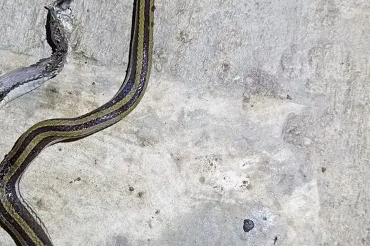
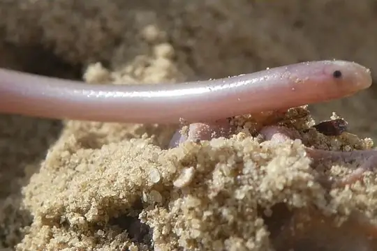
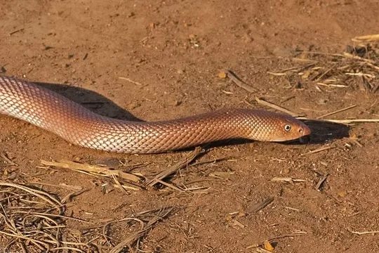
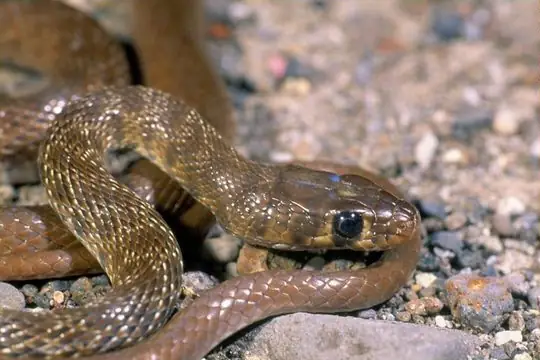
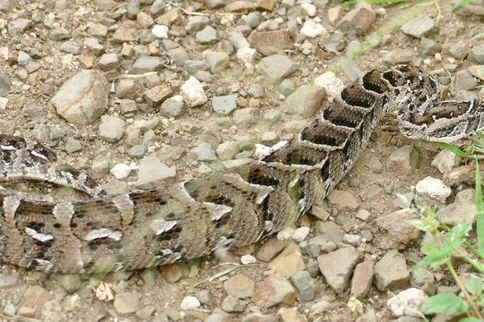
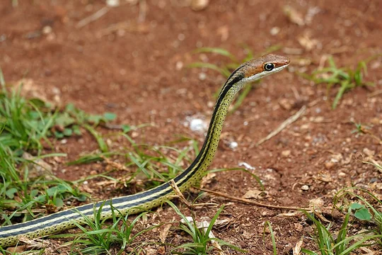
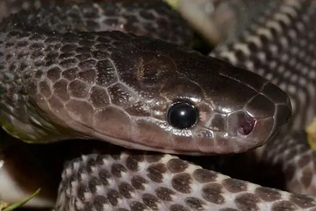

Snakes of Eritrea
36 living snake species are recorded in Eritrea in SnakeList: 13 venomous and 23 non-venomous, from 10 families.
- 36living species
- 10families
Danger to people · tap a number to show only those snakes
Harmful = dangerously venomous + giant constrictors. Harmless = not venomous and not a giant constrictor. Mildly venomous snakes have no serious bites to people documented. Any snake can bite.
These totals count the unique living snake species SnakeList records in Eritrea. A species counts if it is recorded anywhere in the country, so not every snake lives in every part of it.
In SnakeList’s checklist filters
How many of the 36 living species here each filter in the SnakeList app picks out – tap a number to show only those snakes.
Snake family6 types, 10 families
Type
Family
Habitats13 habitat groups
Habitats are estimated from where each snake is recorded and what kind of snake it is, as in the app; a snake can count in several.
Characteristics13 venomous, 2 constrictors
- 0snake eaters
Constrictor and Non-constrictor count only snakes whose family or genus is documented as constricting or not; the rest are not documented.
Other filters5 popular, 13 rare
- 0extinct
Species
Showing 36 species
- No photo yetAfrican Dwarf SnakeEirenis africanus
 African Rock PythonPython sebae
African Rock PythonPython sebae
Banded SnakePseudoboodon lemniscatus Black MambaDendroaspis polylepis
Black MambaDendroaspis polylepis- No photo yetBlanford's Blind-snakeAfrotyphlops blanfordii
 BoomslangDispholidus typus
BoomslangDispholidus typus
Cairo Blind SnakeMyriopholis cairi Cape Wolf Snake (capense)Lycophidion capense
Cape Wolf Snake (capense)Lycophidion capense Common Egg EaterDasypeltis scabra
Common Egg EaterDasypeltis scabra Common File SnakeLimaformosa capensis
Common File SnakeLimaformosa capensis- No photo yetCross-marked Egg-eaterDasypeltis crucifera
- No photo yetDahlak RacerPlatyceps largeni
 Egyptian CatsnakeTelescopus obtusus
Egyptian CatsnakeTelescopus obtusus Egyptian CobraNaja haje
Egyptian CobraNaja haje Egyptian Saw-scaled ViperEchis pyramidum
Egyptian Saw-scaled ViperEchis pyramidum- No photo yetEritrean Blind SnakeLetheobia erythraea
- No photo yetEritrean Worm SnakeMyriopholis erythraeus

Ethiopian Hook-nosed SnakeScaphiophis raffreyi
Flowered RacerPlatyceps florulentus- No photo yetGasca's Ethiopian SnakePseudoboodon gascae
- No photo yetLarge-headed Carpet ViperEchis megalocephalus
- No photo yetMagretti’s Burrowing AspAtractaspis magrettii
 Nubian Spitting CobraNaja nubiae
Nubian Spitting CobraNaja nubiae Nurse's Blind SnakeMyriopholis nursii
Nurse's Blind SnakeMyriopholis nursii Plumbeous Centipede EaterAparallactus lunulatus
Plumbeous Centipede EaterAparallactus lunulatus
Puff AdderBitis arietans Red-lipped SnakeCrotaphopeltis hotamboeia
Red-lipped SnakeCrotaphopeltis hotamboeia Sand BoaEryx colubrinus
Sand BoaEryx colubrinus- No photo yetScortecci's Blind SnakeMyriopholis braccianii

Speckled Sand RacerPsammophis punctulatus Spotted Bush SnakePhilothamnus semivariegatus
Spotted Bush SnakePhilothamnus semivariegatus Striped Sand SnakePsammophis sibilans
Striped Sand SnakePsammophis sibilans Tanganyika Sand SnakePsammophis tanganicus
Tanganyika Sand SnakePsammophis tanganicus- No photo yetTaylor's RacerPlatyceps taylori

Unicolor File SnakeLimaformosa chanleri Variable Burrowing AspAtractaspis irregularis
Variable Burrowing AspAtractaspis irregularis
No snakes in Eritrea match.
Eritrea’s snakes in numbers
- Families: Colubridae 11, Lamprophiidae 5, Leptotyphlopidae 4, Atractaspididae 3, Elapidae 3, Psammophiidae 3, Viperidae 3, Typhlopidae 2, Boidae 1, Pythonidae 1.
- 3 are recorded in no other country or territory in SnakeList: Cross-marked Egg-eater, Dahlak Racer, Eritrean Blind Snake.